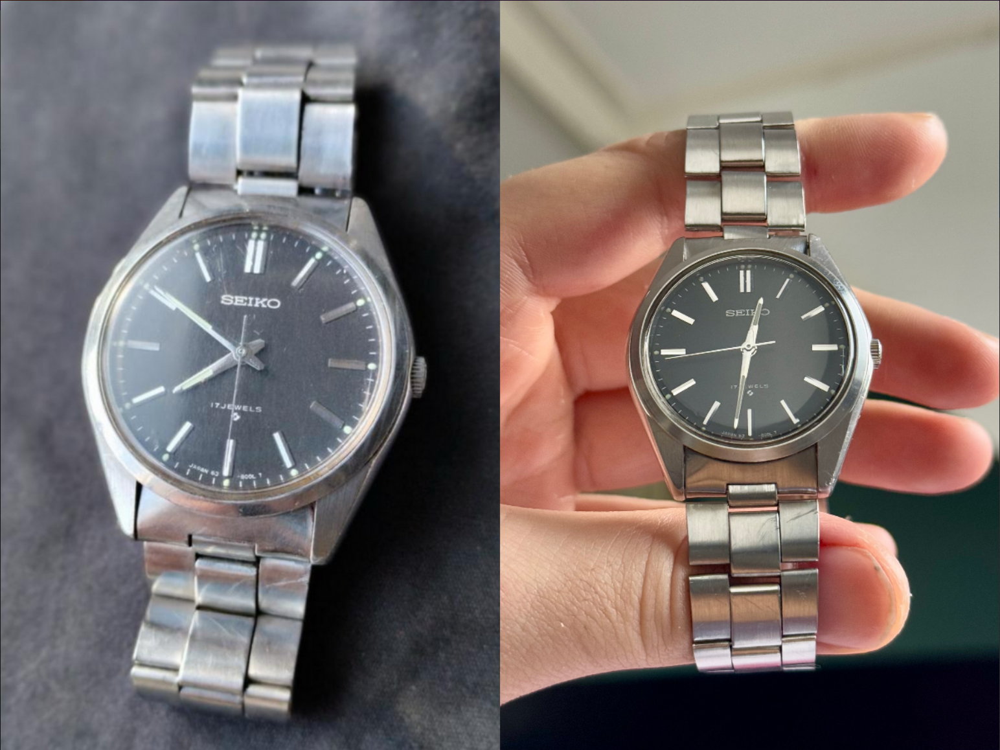
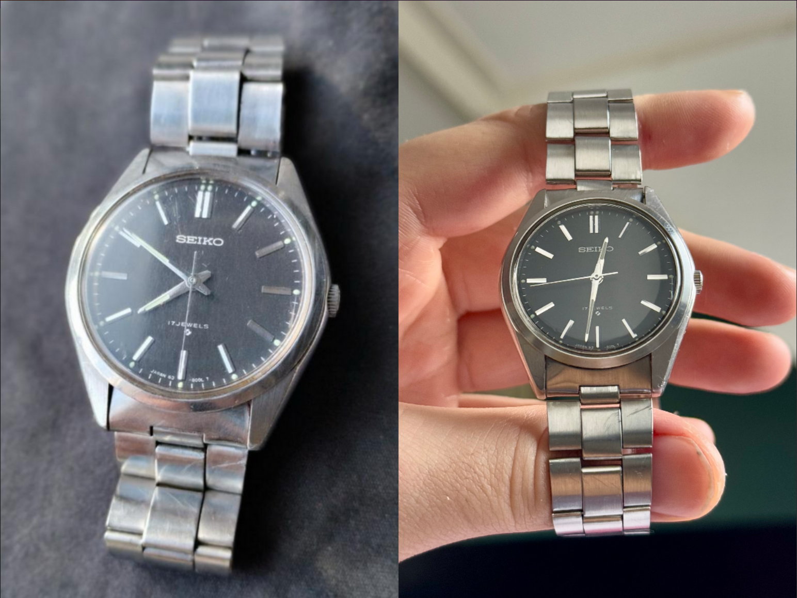

Restoring Vintage Seikos
My tips on how to find a vintage Seiko and get it restored to fresh condition!
A place to dive into vintage watches and restoration guides
My tips on how to find a vintage Seiko and get it restored to fresh condition!
